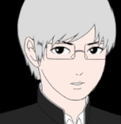
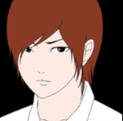
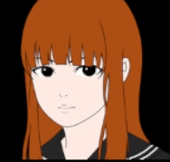
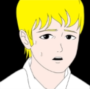
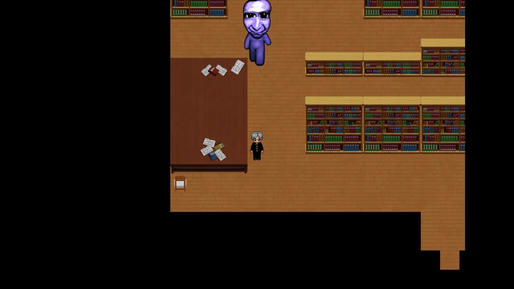
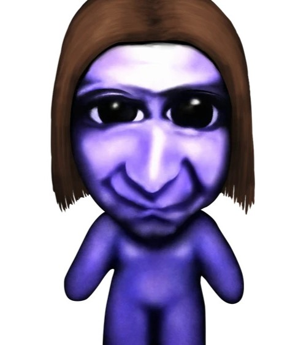
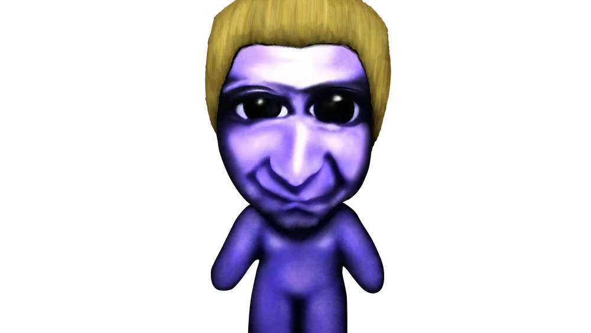
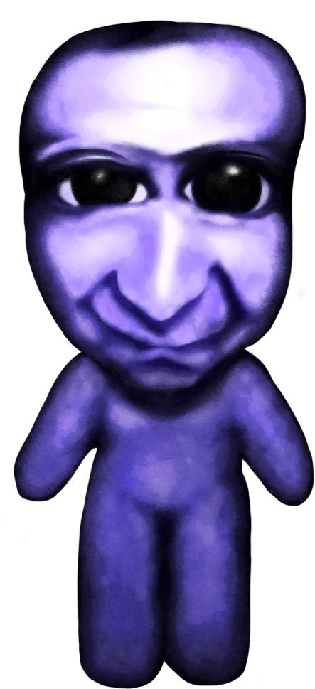
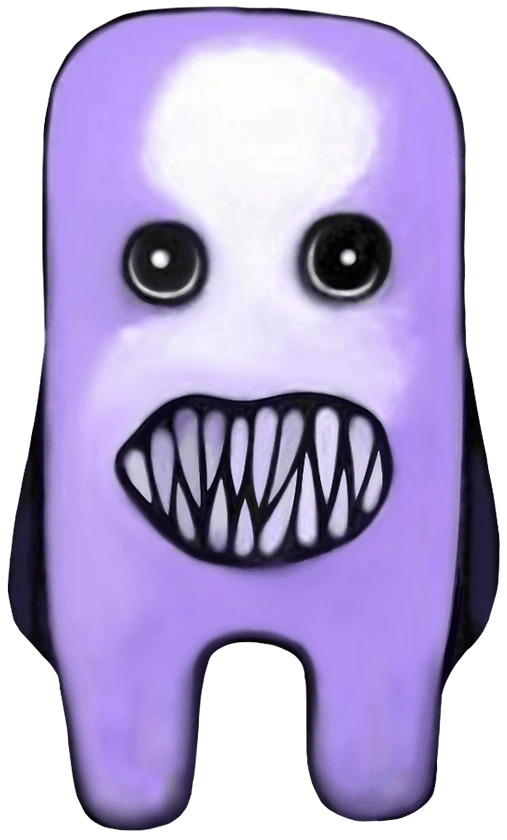
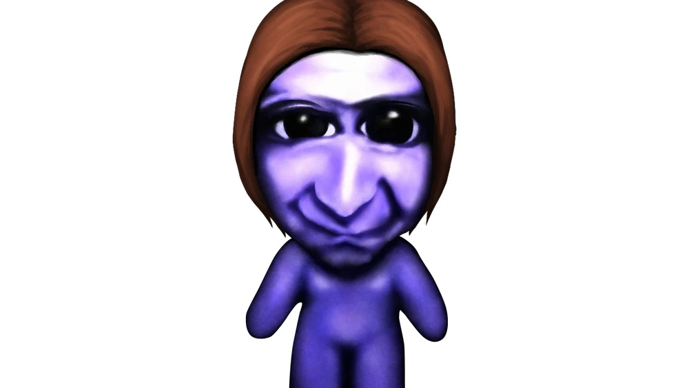

A study of how sounds can bring horror to gameplay
Ao Oni is a Japanese RPG Maker game developed by noprops and was first released in November 2008. While the viduals of the game are not anything to be impressed by and it posses a very simple storyline, the game gained a large following due to it's horror aspects. Although, most of the credit goes to to the chase music which effectively brings a chilling atmosphere.
The story follows Hiroshi and his classmates as he enters a deserted mansion that is rumored to be haunted. Things go wrong when a mysterious creature appears and the only door leading to the exit doesn't work. Control Hiroshi to learn about the mysterious mansion as you solve a variety of puzzles. Just be wary of the creature....
The game opens to show Hiroshi, Takuro, Mika, and Takeshi standing in front of the large mansion. Not long after entering the mansion, the
group hears something break in another room. Hiroshi volunteers to investigate and noticed that a plate had simply shattered. Feeling
reaasured that nothing was wrong, he goes back to reunite with his classmates, only to notice that they weren't there anymore.
Hiroshi------------------------Takuro------------------------Mika------------------------Takeshi
   
From this point and onward, the player will be required to move Hiroshi around the mansion and beyond while solving puzzles to find an exit.
Hence, the player moves Hiroshi down a hallway and there will be a mysterious shadow that walks acorss a door and inside a room. At that
moment, this sound begins to play.
This will be the only time the sound is played. However at this moment, these 16 minutes of sound, plus many others from this game gives the
player, as Massumi has stated, a physical feeling before the player can recognize it as an emotion. With that, we come across another sound.
Please listen to this one carefully as it is the sound that Ao Oni is truly known for.
This is what the player hears when the oni finally shows itself and chases Hiroshi.

There is no method for knowing when the blue creature will appear. Some moments are scripted, but most of the appearences are random and this
music plays exactly as the oni appears. The game is a perfect example for Massumi's statements because at times there is almost no time to
process that a chase is happening. The player is often deeply focused and distracted by walking across maps and attempting to solve puzzles,
but out of nowhere, the creater appears and begins walking towards Hiroshi with this music playing simultaneously. The player can react
quickly and hopefully either hide or run a far enough distance as a means of excape. In any case, there will always be that initial physical
response to this terrifying music before the player can fully have that emotional response of fear and surprise.
Compared to the image of the default oni on the left, there are many other creatures that make appearences as well as other sounds woth
noting. The next sound being Mika's scream as heard below.
Hiroshi rushes over to where he found Mika before and sees that the creature has started to eat her. The blue oni chases Hiroshi right after
until he successfully runs away. As the player continues the game while solving different puzzles, they soon discover that when someone is
eaten, they are also turned into one of the creatures.

Hiroshi soon discovers that Takeshi also turns into an oni. All the while Mika and Takeshi were classmates of Hiroshi, they also come after
the player. Luckily, escaping them is done the same way as the default creature.

In Japanese, ao (青) means blue and oni (鬼) is a demonic creature often depicted to be large with a fearful appearence!

I believe it is important to mention some of the background music that can be heard while it rains and when the player arrives at specific
maps.
This rain sound plays when the player is in rooms or hallways where windows are located. It is one of the calmer sounds heard throughout the
game. It both brings a sense of tranquility and anxiousness. On the other hand, this breathing sound below is quite creepy and it can feels
as though someone is breathing against your neck. The music is heard when the start screen is shown and when Hiroshi walks around the basement
map.
The player soon begins to reach the end of the game and finds the last of Hiroshi's classmates and the only other survivor, Takuro. He is
found hiding and explains that he had twisted his ankle while asking Hiroshi to walk around while he rests. Hiroshi then continues to solve
a few more puzzles until he finds a rope ladder that leads towards an exit. The player walks back towards Takuro and he joins the party. Once
they both reach the rope ladder, they discover that the creature has eaten it. Hiroshi and Takuro run away when the oni spots them, but Takuro
falls and allows Hiroshi to escape without him. Takuro disappears and isn't seen again. Although, there is a moment when Hiroshi enters the
map of the Old Building, where this unique oni appears.

This oni is known to walk normally for a few seconds before speading past. The same chase music plays during the chase scene, but it is much
harder to avoid being caught. After the player has many tries and solves the last remaining puzzles, Takuro suddenly appears behind the player
while asking to join. Hiroshi, surpised to see his friend is still alive, allows him to join the party. The player solves the remaining puzzle
but....

Takuro shows himself as an oni. The player has to avoid him and finally, reach the door that leads towards the outdoors. Even tho Takuro as an
oni chases after the player, Hiroshi manages to escape. Hiroshi explains that he never once looked back after running and refused to tell
others about what occured.
During my childhood, I greatly appreciated indie RPG Maker games and often played them. I decided to revisit Ao Oni for the purpose of this project. It is a short playthrough that took me about five hours to complete. Although there were many times where I jumped in my seat, I enjoyed every moment of this game. My favorite aspects will always be when the creature appears at random and the music that follows. The popularity of Ao Oni has grown so much so that there are now movie adaptations as well as a light novel series and manga. The indie RPG Maker games community was quite small, but Ao Oni truly brought the attention to the community to those who had yet to explore it. Thus, more RPG Maker games were created following Ao Oni's success.
A few references made from Massumi's "The Autonomy of Affect".